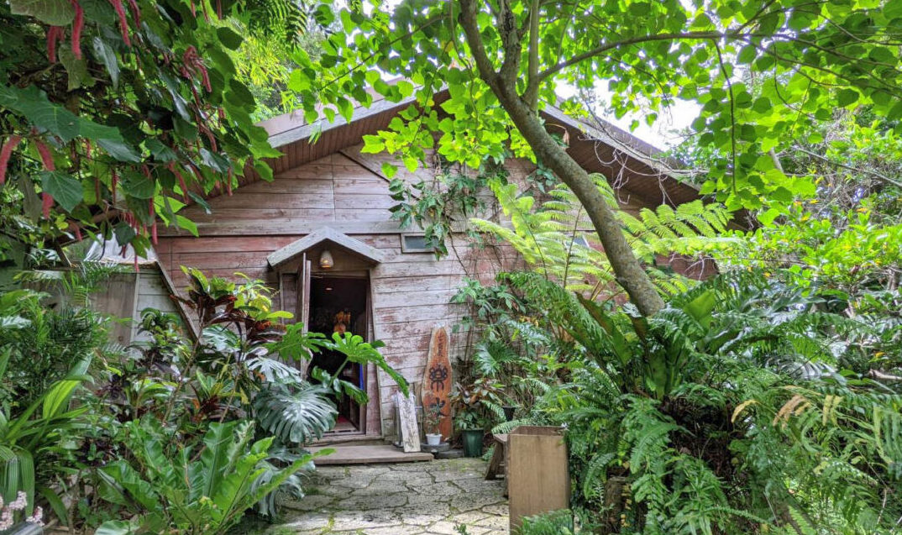

-



好きなことを一生懸命やってきた。身を捧げてきたといっていいくらい毎日真剣だった。好きだからやり続けられたんだけどね。そればかりでもない。がんばったわよ。そして、今度はお客さんが認めてくれた。自分自身が過ごしたいと思う時間やシーンをイメージして形にしたものをね。浜辺の茶屋にお客さんが付きはじめて、『コーヒーの次は食事ができる場所がほしい』、と思うようになった。それで山の茶屋。
好きなことを一生懸命やってきた。身を捧げてきたといっていいくらい毎日真剣だった。好きだからやり続けられたんだけどね。そればかりでもない。がんばったわよ。そして、今度はお客さんが認めてくれた。自分自身が過ごしたいと思う時間やシーンをイメージして形にしたものをね。浜辺の茶屋にお客さんが付きはじめて、『コーヒーの次は食事ができる場所がほしい』、と思うようになった。それで山の茶屋。